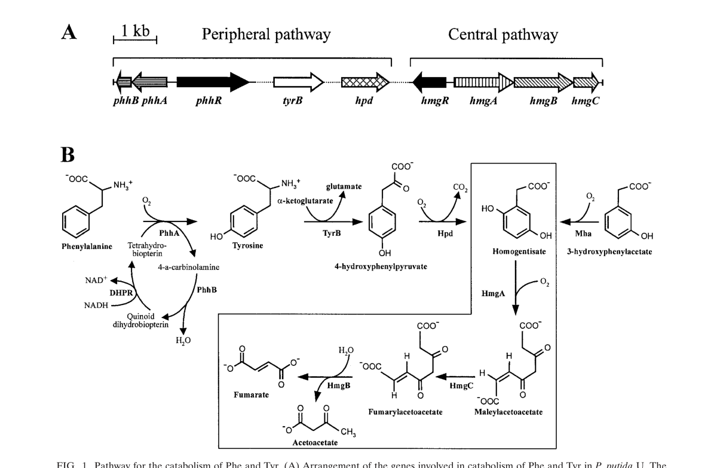

hpd (PP_3433) encodes 4-hydroxyphenylpyruvate dioxygenase (HPPD; EC 1.13.11.27), a cytoplasmic non-heme Fe(II)-dependent oxygenase of the 4HPPD (VOC superfamily) family. It catalyzes the conversion of 4-hydroxyphenylpyruvate to homogentisate, coupling oxidative decarboxylation, aromatic hydroxylation, and a 1,2-side-chain migration in a single reaction that consumes molecular oxygen. This is the committed, gateway step of the homogentisate central catabolic pathway, through which Pseudomonas putida degrades L-tyrosine, L-phenylalanine, and 3-hydroxyphenylacetate to the central metabolites fumarate and acetoacetate. Loss of hpd abolishes growth on tyrosine or phenylalanine as sole carbon source, confirming its essential role in routing aromatic amino acids into central metabolism.
| GO Term | Evidence | Action | Reason |
|---|---|---|---|
|
GO:0003868
4-hydroxyphenylpyruvate dioxygenase activity
|
IEA
GO_REF:0000120 |
ACCEPT |
Summary: Core molecular function. Q88HC7 belongs to the 4HPPD family (TIGR01263, IPR005956, PANTHER PTHR11959:SF1) and carries the conserved His/His/Glu Fe(II)-binding triad (residues 162, 241, 323). The HPPD function is strongly supported in P. putida by genetics, proteomics and RB-TnSeq fitness data (see hpd-deep-research-falcon.md; PMID:15262943).
Reason: Directly supported by family/domain assignment and by experimental evidence that hpd is required for growth on tyrosine/phenylalanine via the homogentisate pathway in P. putida.
|
|
GO:0006572
L-tyrosine catabolic process
|
IEA
GO_REF:0000118 |
ACCEPT |
Summary: HPPD performs the gateway step (4-HPP to homogentisate) of the homogentisate pathway, the route by which P. putida degrades L-tyrosine. hpd mutants cannot grow on tyrosine as sole carbon source.
Reason: Accurate biological process; well supported by the homogentisate pathway literature in P. putida.
|
|
GO:0009072
aromatic amino acid metabolic process
|
IEA
GO_REF:0000002 |
MODIFY |
Summary: Correct but more general than the specific catabolic role. The homogentisate pathway degrades both tyrosine and phenylalanine, so an aromatic-amino-acid-level term is defensible, but the more informative term is the catabolic process.
Reason: The annotation is correct but the generic metabolic term under-specifies the function. Replace with the catabolic process term, which captures the documented degradative role.
Proposed replacements:
aromatic amino acid catabolic process
|
|
GO:0016701
oxidoreductase activity, acting on single donors with incorporation of molecular oxygen
|
IEA
GO_REF:0000002 |
MARK AS OVER ANNOTATED |
Summary: This is a high-level parent of the specific 4-hydroxyphenylpyruvate dioxygenase activity (GO:0003868), which is already annotated. It is not wrong but is redundant and uninformative given the specific child term.
Reason: Grouping/parent term subsumed by the specific GO:0003868 annotation; retained for completeness but adds no specific functional information.
|
The research report should be a detailed narrative explaining the function, biological processes, and localization of the gene product. Citations should be given for all claims.
You should prioritize authoritative reviews and primary scientific literature when conducting research. You can supplement
this with annotations you find in gene/protein databases, but these can be outdated or inaccurate.
We are specifically interested in the primary function of the gene - for enzymes, what reaction is catalyzed, and what is the substrate specificity? For transporters, what is the substrate? For structural proteins or adapters, what is the broader structural role? For signaling molecules, what is the role in the pathway.
We are interested in where in or outside the cell the gene product carries out its function.
We are also interested in the signaling or biochemical pathways in which the gene functions. We are less interested in broad pleiotropic effects, except where these elucidate the precise role.
Include evidence where possible. We are interested in both experimental evidence as well as inference from structure, evolution, or bioinformatic analysis. Precise studies should be prioritized over high-throughput, where available.
The UniProt target Q88HC7 corresponds to hpd / PP_3433 in Pseudomonas putida KT2440 and is annotated as 4-hydroxyphenylpyruvate dioxygenase (HPPD; EC 1.13.11.27). Independent KT2440-focused sources explicitly identify hpd as an HPPD-family enzyme acting in aromatic amino-acid catabolism (tyrosine/phenylalanine → homogentisate), including genome-based pathway analysis and pathway-specific genetic studies. (jimenez2002genomicanalysisof pages 12-14, ariasbarrau2004thehomogentisatepathway pages 1-2)
Early KT2440 genome annotation also identifies the hpd product as a ~358 aa protein (ORF03099) with high similarity to other bacterial HPPDs, supporting that the retrieved literature is about the correct protein family (4HPPD/HPPD family) and not an unrelated “hpd” symbol in a different pathway/organism. (jimenez2002genomicanalysisof pages 12-14)
4-hydroxyphenylpyruvate dioxygenase (HPPD/Hpd) catalyzes the oxidative transformation of 4-hydroxyphenylpyruvate (4-HPP) to homogentisate (HGA). This step links peripheral tyrosine/phenylalanine transformations to the homogentisate central pathway. (ariasbarrau2004thehomogentisatepathway pages 1-2, neuckermans2019arobustbacterial pages 1-2)
In P. putida, this function is specifically attributed to hpd (PP_3433), with pathway schematics showing Hpd acting upstream of homogentisate ring-cleavage and downstream β-ketoacid steps. (ariasbarrau2004thehomogentisatepathway media 6c561743)
HPPD is a non-heme Fe(II)-dependent oxygenase. Structural/mechanistic literature describes a conserved active-site metal-binding motif with two histidines and one glutamate coordinating Fe(II), and an oxidative chemistry that couples O2 activation, oxidative decarboxylation, aromatic hydroxylation, and an unusual 1,2 side-chain migration to yield homogentisate. (santucci20174hydroxyphenylpyruvatedioxygenaseand pages 6-7, santucci20174hydroxyphenylpyruvatedioxygenaseand pages 7-8)
Although these mechanistic studies focus heavily on plant/animal enzymes, the same catalytic logic and cofactor requirements apply broadly across HPPD homologs (including bacteria) and support functional inference for P. putida Hpd. (santucci20174hydroxyphenylpyruvatedioxygenaseand pages 2-3, trezza2024molecularandevolution pages 1-2)
In P. putida, the homogentisate pathway is described as a central catabolic route for degradation of L-tyrosine, L-phenylalanine, and related aromatics, converging on homogentisate and yielding central metabolites (e.g., fumarate and acetoacetate) via downstream enzymes (HmgA/HmgC/HmgB). (ariasbarrau2004thehomogentisatepathway pages 1-2, ariasbarrau2004thehomogentisatepathway pages 5-6)
A pathway figure from Arias-Barrau et al. shows (i) the genetic organization of peripheral/central modules and (ii) the biochemical steps with Hpd converting 4-HPP to homogentisate, which then enters the boxed “central” homogentisate pathway. (ariasbarrau2004thehomogentisatepathway media 6c561743)
In KT2440 genome reconstructions, hpd is colocated in a broader aromatic catabolic region that includes genes for homogentisate processing (e.g., hmgA) and downstream steps (e.g., maleylacetoacetate isomerase, fumarylacetoacetate hydrolase family enzymes), consistent with the role of hpd as a gateway into homogentisate metabolism. (jimenez2002genomicanalysisof pages 12-14)
Proteomic profiling of KT2440 under aromatic-catabolic conditions found that Hpd and HmgA are induced in response to phenylalanine, consistent with active use of the homogentisate route for aromatic amino-acid assimilation. (kim2006analysisofaromatic pages 1-2)
Disruption of hpd in Pseudomonas putida strains tested in the homogentisate-pathway study caused a strong utilization phenotype: hpd mutants were unable to grow on minimal medium with phenylalanine or tyrosine as sole carbon/energy source, consistent with Hpd being essential for routing these substrates into central metabolism. (ariasbarrau2004thehomogentisatepathway pages 8-10)
The global regulator Crc controls catabolic gene expression in P. putida; proteomic comparison of WT versus crc mutant strains indicates that Crc mediates catabolite repression affecting hpd and hmgA among other aromatic-catabolic pathway components. (morales2004thepseudomonasputida pages 1-2)
A 2024 mSystems study analyzed a compendium of RB-TnSeq fitness data from P. putida KT2440 across 179 conditions, applying independent component analysis to infer functional gene modules (“fModules”). In this dataset-driven framework, hpd clustered with phenylalanine/tyrosine catabolism genes and showed substantial growth defects upon transposon disruption during growth on L-phenylalanine, providing modern, high-throughput functional confirmation that hpd is critical for aromatic amino-acid utilization in KT2440. (borchert2024machinelearninganalysis pages 7-11)
This approach also highlights how integrated fitness-genomics can drive annotation improvements: the same study reports reannotation logic for a related aminotransferase (AmaC) based on essentiality patterns on L-Phe/L-Tyr, illustrating the direction of current functional-annotation practice in Pseudomonas (data compendia + ML + targeted validation). (borchert2024machinelearninganalysis pages 7-11)
A 2024 in silico/mechanistic analysis emphasizes the role of the C-terminal gating element and water exclusion in maintaining productive catalysis in HPPD-family enzymes. While focused on human HPPD, the work summarizes features with cross-lineage relevance (Fe(II)-dependent catalysis, conserved coordination triad, and gating that helps exclude water from the active site), providing a contemporary mechanistic lens that can inform interpretation of bacterial HPPDs and inhibitor responses. (trezza2024molecularandevolution pages 1-2)
Because hpd initiates a major tyrosine-degradation route, it can compete with engineered pathways that require tyrosine as a precursor.
In an engineered P. putida S12 background producing p-hydroxybenzoate, targeted disruption of hpd increased titers and yields in shake-flask cultures (mineral medium, 20 mM glucose):
- Titer increased from 1.8 mM → 2.3 mM
- Carbon yield Yps increased 10.5 → 13.4 C-mol% (reported as 22% relative improvement)
- Specific production rate qp increased 1.6 → 2.3 μmol (g CDW·min)−1
- qp,max increased 3.8 → 4.4 μmol (g CDW·min)−1
These data show hpd is a practical engineering target to reduce tyrosine drain into catabolism and increase aromatic-product yields. (verhoef2010comparativetranscriptomicsand pages 9-11)
In a phenol-production context in P. putida S12 derivatives, an hpd knockout substantially changed the temporal production profile: 62% of phenol was produced after growth in the hpd mutant versus 28% in the parent strain. This supports that Hpd impacts carbon partitioning and overflow metabolism during aromatic-product formation. (wierckx2008transcriptomeanalysisof pages 5-7)
HPPD enzymes are inhibited by β-triketones (e.g., nitisinone/NTBC), which chelate the active-site Fe(II) and block HPP→HGA conversion; in bacterial assay systems, HPPD inhibition reduces HGA formation and downstream pigment formation, providing a convenient functional readout. While these examples are not KT2440-specific, they are directly relevant to designing experiments probing P. putida Hpd activity and susceptibility. (neuckermans2019arobustbacterial pages 1-2, santucci20174hydroxyphenylpyruvatedioxygenaseand pages 7-8)
The retrieved KT2440-focused literature does not report a direct experimental subcellular localization for PP_3433/Hpd (e.g., cytosolic vs. periplasmic fractionation). Therefore, localization should be treated as inference rather than established fact in KT2440 based on the current evidence set. (ariasbarrau2004thehomogentisatepathway pages 8-10, jimenez2002genomicanalysisof pages 12-14)
Functionally, Hpd acts in intracellular aromatic amino-acid catabolism as part of the enzymatic chain converting L-Tyr/L-Phe-derived intermediates into central metabolism, as depicted in pathway schematics. (ariasbarrau2004thehomogentisatepathway media 6c561743)
The following table consolidates the main functional-annotation claims and supporting evidence.
| Claim/Aspect | Key finding (with quantitative values where available) | Organism/strain | Evidence type | Source (author year journal) | URL | Citation ID |
|---|---|---|---|---|---|---|
| Reaction / primary function | hpd / PP_3433 encodes 4-hydroxyphenylpyruvate dioxygenase (EC 1.13.11.27), catalyzing 4-hydroxyphenylpyruvate → homogentisate in tyrosine catabolism; HPPD is a non-heme Fe(II)-dependent oxygenase | Pseudomonas putida KT2440; broader HPPD family | Pathway genetics; biochemical review | Arias-Barrau et al. 2004 J Bacteriol; Santucci et al. 2017 J Med Chem | https://doi.org/10.1128/jb.186.15.5062-5077.2004 ; https://doi.org/10.1021/acs.jmedchem.6b01395 | (ariasbarrau2004thehomogentisatepathway pages 1-2, santucci20174hydroxyphenylpyruvatedioxygenaseand pages 2-3) |
| Pathway role | Hpd performs the peripheral step feeding the homogentisate central pathway; downstream HmgA/HmgC/HmgB convert homogentisate to fumarate + acetoacetate | P. putida KT2440 / P. putida U | Genetics; pathway reconstruction | Arias-Barrau et al. 2004 J Bacteriol | https://doi.org/10.1128/jb.186.15.5062-5077.2004 | (ariasbarrau2004thehomogentisatepathway pages 1-2, ariasbarrau2004thehomogentisatepathway media 6c561743) |
| Genomic context / identity verification | Early KT2440 genome annotation identifies ORF03099 / hpd, a 358-aa Hpd with 88% aa identity to P. fluorescens HPPD; located in a chromosomal region containing hmgA, mai, fah and related aromatic-amino-acid catabolic genes | P. putida KT2440 | Genomics / comparative annotation | Jiménez et al. 2002 Environ Microbiol | https://doi.org/10.1046/j.1462-2920.2002.00370.x | (jimenez2002genomicanalysisof pages 12-14) |
| Regulation | The Crc global regulator represses/catabolically controls expression of hpd and hmgA in the homogentisate pathway during growth in rich medium | P. putida | Proteomics; regulatory genetics | Morales et al. 2004 J Bacteriol | https://doi.org/10.1128/jb.186.5.1337-1344.2004 | (morales2004thepseudomonasputida pages 1-2) |
| Omics evidence in KT2440 | Proteomics showed Hpd and HmgA are induced by phenylalanine, supporting assignment of Hpd to the phenylalanine/tyrosine → homogentisate route | P. putida KT2440 | Proteomics | Kim et al. 2006 PROTEOMICS | https://doi.org/10.1002/pmic.200500329 | (kim2006analysisofaromatic pages 1-2) |
| Mutant phenotype / carbon utilization | hpd mutants were unable to grow on minimal medium with phenylalanine or tyrosine as sole carbon/energy source; mutants accumulated a colored oxidation product consistent with pathway blockage upstream of homogentisate utilization | P. putida derivatives; pathway validated against KT2440 homologous locus | Genetics / growth phenotype | Arias-Barrau et al. 2004 J Bacteriol | https://doi.org/10.1128/jb.186.15.5062-5077.2004 | (ariasbarrau2004thehomogentisatepathway pages 8-10) |
| Engineering phenotype | Targeted hpd disruption increased p-hydroxybenzoate production from 1.8 to 2.3 mM; Yps 10.5 → 13.4 C-mol% (22% improvement); qp 1.6 → 2.3 μmol gCDW⁻¹ min⁻¹; qp,max 3.8 → 4.4 μmol gCDW⁻¹ min⁻¹ | P. putida S12palB1 → S12palB2 (Δhpd) | Metabolic engineering; phenotype | Verhoef et al. 2010 Appl Microbiol Biotechnol | https://doi.org/10.1007/s00253-010-2626-z | (verhoef2010comparativetranscriptomicsand pages 9-11) |
| Transcriptomic signal during production strain engineering | In a p-hydroxybenzoate-producing strain, hpd (PP3433) was upregulated with reported table values 1.5 (below threshold) and 2.8, consistent with tyrosine degradation competing with product formation | P. putida S12palB1 | Transcriptomics / proteomics | Verhoef et al. 2010 Appl Microbiol Biotechnol | https://doi.org/10.1007/s00253-010-2626-z | (verhoef2010comparativetranscriptomicsand pages 8-9) |
| Related production phenotype | In phenol-production engineering, hpd was upregulated 2.8-fold; an hpd knockout shifted phenol production post-growth, with 62% of phenol formed after growth versus 28% in the parent strain | P. putida S12-derived strains | Transcriptomics; knockout phenotype | Wierckx et al. 2008 J Bacteriol | https://doi.org/10.1128/jb.01379-07 | (wierckx2008transcriptomeanalysisof pages 5-7, wierckx2008transcriptomeanalysisof pages 4-5) |
| Recent 2024 RB-TnSeq findings | Machine-learning analysis of RB-TnSeq fitness data (179 conditions) placed hpd in a module for L-phenylalanine/tyrosine catabolism; hpd transposon knockouts showed substantial growth defects on L-Phe, supporting a direct role in aromatic amino-acid assimilation | P. putida KT2440 | RB-TnSeq fitness genomics / ML analysis | Borchert et al. 2024 mSystems | https://doi.org/10.1128/msystems.00942-23 | (borchert2024machinelearninganalysis pages 7-11) |
| Mechanistic annotation support | HPPD enzymes are typically tetrameric in bacteria, use a conserved His/His/Glu metal-binding triad, and catalysis requires substrate-bound Fe(II) plus O2; these features support inference for PP_3433 as a canonical bacterial HPPD-family enzyme | Bacterial HPPDs broadly | Structural / mechanistic review | Santucci et al. 2017 J Med Chem; Trezza et al. 2024 Biomedicines | https://doi.org/10.1021/acs.jmedchem.6b01395 ; https://doi.org/10.3390/biomedicines12061196 | (santucci20174hydroxyphenylpyruvatedioxygenaseand pages 6-7, trezza2024molecularandevolution pages 1-2) |
Table: This table summarizes the main evidence supporting functional annotation of Pseudomonas putida KT2440 hpd (PP_3433; UniProt Q88HC7), including its enzymatic reaction, pathway placement, regulation, phenotypes, and recent 2024 functional-genomics support.
A pathway/genetic schematic demonstrating Hpd’s placement and reaction within the homogentisate pathway in P. putida is shown in Arias-Barrau et al. (Figure 1), including Hpd-mediated conversion of 4-hydroxyphenylpyruvate to homogentisate and entry into the central homogentisate pathway. (ariasbarrau2004thehomogentisatepathway media 6c561743)
Collectively, KT2440 genomic context, proteomic induction, genetic growth phenotypes, and modern RB-TnSeq fitness analysis converge on a consistent functional annotation: hpd (PP_3433; UniProt Q88HC7) encodes a canonical Fe(II)-dependent 4-hydroxyphenylpyruvate dioxygenase (EC 1.13.11.27) that performs the key gateway step 4-HPP → homogentisate in the homogentisate pathway, enabling assimilation of aromatic amino acids into central metabolism. (jimenez2002genomicanalysisof pages 12-14, kim2006analysisofaromatic pages 1-2, ariasbarrau2004thehomogentisatepathway pages 8-10, borchert2024machinelearninganalysis pages 7-11)
From an application standpoint, hpd is a validated metabolic-engineering knob: disabling it can increase availability of tyrosine-derived precursors and improve yields/titers of aromatic products in engineered Pseudomonas. (verhoef2010comparativetranscriptomicsand pages 9-11)
References
(jimenez2002genomicanalysisof pages 12-14): José Ignacio Jiménez, Baltasar Miñambres, José Luis García, and Eduardo Díaz. Genomic analysis of the aromatic catabolic pathways from pseudomonas putida kt2440. Environmental microbiology, 4 12:824-41, Dec 2002. URL: https://doi.org/10.1046/j.1462-2920.2002.00370.x, doi:10.1046/j.1462-2920.2002.00370.x. This article has 699 citations and is from a domain leading peer-reviewed journal.
(ariasbarrau2004thehomogentisatepathway pages 1-2): Elsa Arias-Barrau, Elías R. Olivera, José M. Luengo, Cristina Fernández, Beatriz Galán, José L. García, Eduardo Díaz, and Baltasar Miñambres. The homogentisate pathway: a central catabolic pathway involved in the degradation of l-phenylalanine, l-tyrosine, and 3-hydroxyphenylacetate in pseudomonas putida. Journal of Bacteriology, 186:5062-5077, Aug 2004. URL: https://doi.org/10.1128/jb.186.15.5062-5077.2004, doi:10.1128/jb.186.15.5062-5077.2004. This article has 317 citations and is from a peer-reviewed journal.
(neuckermans2019arobustbacterial pages 1-2): Jessie Neuckermans, Alan Mertens, Dinja De Win, Ulrich Schwaneberg, and Joery De Kock. A robust bacterial assay for high-throughput screening of human 4-hydroxyphenylpyruvate dioxygenase inhibitors. Scientific Reports, Oct 2019. URL: https://doi.org/10.1038/s41598-019-50533-1, doi:10.1038/s41598-019-50533-1. This article has 32 citations and is from a peer-reviewed journal.
(ariasbarrau2004thehomogentisatepathway media 6c561743): Elsa Arias-Barrau, Elías R. Olivera, José M. Luengo, Cristina Fernández, Beatriz Galán, José L. García, Eduardo Díaz, and Baltasar Miñambres. The homogentisate pathway: a central catabolic pathway involved in the degradation of l-phenylalanine, l-tyrosine, and 3-hydroxyphenylacetate in pseudomonas putida. Journal of Bacteriology, 186:5062-5077, Aug 2004. URL: https://doi.org/10.1128/jb.186.15.5062-5077.2004, doi:10.1128/jb.186.15.5062-5077.2004. This article has 317 citations and is from a peer-reviewed journal.
(santucci20174hydroxyphenylpyruvatedioxygenaseand pages 6-7): Annalisa Santucci, Giulia Bernardini, Daniela Braconi, Elena Petricci, and Fabrizio Manetti. 4-hydroxyphenylpyruvate dioxygenase and its inhibition in plants and animals: small molecules as herbicides and agents for the treatment of human inherited diseases. Journal of medicinal chemistry, 60 10:4101-4125, Feb 2017. URL: https://doi.org/10.1021/acs.jmedchem.6b01395, doi:10.1021/acs.jmedchem.6b01395. This article has 116 citations and is from a highest quality peer-reviewed journal.
(santucci20174hydroxyphenylpyruvatedioxygenaseand pages 7-8): Annalisa Santucci, Giulia Bernardini, Daniela Braconi, Elena Petricci, and Fabrizio Manetti. 4-hydroxyphenylpyruvate dioxygenase and its inhibition in plants and animals: small molecules as herbicides and agents for the treatment of human inherited diseases. Journal of medicinal chemistry, 60 10:4101-4125, Feb 2017. URL: https://doi.org/10.1021/acs.jmedchem.6b01395, doi:10.1021/acs.jmedchem.6b01395. This article has 116 citations and is from a highest quality peer-reviewed journal.
(santucci20174hydroxyphenylpyruvatedioxygenaseand pages 2-3): Annalisa Santucci, Giulia Bernardini, Daniela Braconi, Elena Petricci, and Fabrizio Manetti. 4-hydroxyphenylpyruvate dioxygenase and its inhibition in plants and animals: small molecules as herbicides and agents for the treatment of human inherited diseases. Journal of medicinal chemistry, 60 10:4101-4125, Feb 2017. URL: https://doi.org/10.1021/acs.jmedchem.6b01395, doi:10.1021/acs.jmedchem.6b01395. This article has 116 citations and is from a highest quality peer-reviewed journal.
(trezza2024molecularandevolution pages 1-2): Alfonso Trezza, Ancuta Birgauan, Michela Geminiani, Anna Visibelli, and Annalisa Santucci. Molecular and evolution in silico studies unlock the h4-hppd c-terminal tail gating mechanism. Biomedicines, 12:1196, May 2024. URL: https://doi.org/10.3390/biomedicines12061196, doi:10.3390/biomedicines12061196. This article has 4 citations.
(ariasbarrau2004thehomogentisatepathway pages 5-6): Elsa Arias-Barrau, Elías R. Olivera, José M. Luengo, Cristina Fernández, Beatriz Galán, José L. García, Eduardo Díaz, and Baltasar Miñambres. The homogentisate pathway: a central catabolic pathway involved in the degradation of l-phenylalanine, l-tyrosine, and 3-hydroxyphenylacetate in pseudomonas putida. Journal of Bacteriology, 186:5062-5077, Aug 2004. URL: https://doi.org/10.1128/jb.186.15.5062-5077.2004, doi:10.1128/jb.186.15.5062-5077.2004. This article has 317 citations and is from a peer-reviewed journal.
(kim2006analysisofaromatic pages 1-2): Young Hwan Kim, Kun Cho, Sung‐Ho Yun, Jin Young Kim, Kyung‐Hoon Kwon, Jong Shin Yoo, and Seung Il Kim. Analysis of aromatic catabolic pathways in pseudomonas putida kt 2440 using a combined proteomic approach: 2‐de/ms and cleavable isotope‐coded affinity tag analysis. PROTEOMICS, 6:1301-1318, Feb 2006. URL: https://doi.org/10.1002/pmic.200500329, doi:10.1002/pmic.200500329. This article has 210 citations and is from a peer-reviewed journal.
(ariasbarrau2004thehomogentisatepathway pages 8-10): Elsa Arias-Barrau, Elías R. Olivera, José M. Luengo, Cristina Fernández, Beatriz Galán, José L. García, Eduardo Díaz, and Baltasar Miñambres. The homogentisate pathway: a central catabolic pathway involved in the degradation of l-phenylalanine, l-tyrosine, and 3-hydroxyphenylacetate in pseudomonas putida. Journal of Bacteriology, 186:5062-5077, Aug 2004. URL: https://doi.org/10.1128/jb.186.15.5062-5077.2004, doi:10.1128/jb.186.15.5062-5077.2004. This article has 317 citations and is from a peer-reviewed journal.
(morales2004thepseudomonasputida pages 1-2): Gracia Morales, Juan Francisco Linares, Ana Beloso, Juan Pablo Albar, José Luis Martínez, and Fernando Rojo. The pseudomonas putida crc global regulator controls the expression of genes from several chromosomal catabolic pathways for aromatic compounds. Journal of Bacteriology, 186:1337-1344, Mar 2004. URL: https://doi.org/10.1128/jb.186.5.1337-1344.2004, doi:10.1128/jb.186.5.1337-1344.2004. This article has 171 citations and is from a peer-reviewed journal.
(borchert2024machinelearninganalysis pages 7-11): Andrew J. Borchert, Alissa C. Bleem, Hyun Gyu Lim, Kevin Rychel, Keven D. Dooley, Zoe A. Kellermyer, Tracy L. Hodges, Bernhard O. Palsson, and Gregg T. Beckham. Machine learning analysis of rb-tnseq fitness data predicts functional gene modules in pseudomonas putida kt2440. Mar 2024. URL: https://doi.org/10.1128/msystems.00942-23, doi:10.1128/msystems.00942-23. This article has 13 citations and is from a peer-reviewed journal.
(verhoef2010comparativetranscriptomicsand pages 9-11): Suzanne Verhoef, Hendrik Ballerstedt, Rita J. M. Volkers, Johannes H. de Winde, and Harald J. Ruijssenaars. Comparative transcriptomics and proteomics of p-hydroxybenzoate producing pseudomonas putida s12: novel responses and implications for strain improvement. Applied Microbiology and Biotechnology, 87:679-690, May 2010. URL: https://doi.org/10.1007/s00253-010-2626-z, doi:10.1007/s00253-010-2626-z. This article has 91 citations and is from a domain leading peer-reviewed journal.
(wierckx2008transcriptomeanalysisof pages 5-7): Nick J. P. Wierckx, Hendrik Ballerstedt, Jan A. M. de Bont, Johannes H. de Winde, Harald J. Ruijssenaars, and Jan Wery. Transcriptome analysis of a phenol-producing pseudomonas putida s12 construct: genetic and physiological basis for improved production. Apr 2008. URL: https://doi.org/10.1128/jb.01379-07, doi:10.1128/jb.01379-07. This article has 70 citations and is from a peer-reviewed journal.
(wierckx2008transcriptomeanalysisof pages 4-5): Nick J. P. Wierckx, Hendrik Ballerstedt, Jan A. M. de Bont, Johannes H. de Winde, Harald J. Ruijssenaars, and Jan Wery. Transcriptome analysis of a phenol-producing pseudomonas putida s12 construct: genetic and physiological basis for improved production. Apr 2008. URL: https://doi.org/10.1128/jb.01379-07, doi:10.1128/jb.01379-07. This article has 70 citations and is from a peer-reviewed journal.
(verhoef2010comparativetranscriptomicsand pages 8-9): Suzanne Verhoef, Hendrik Ballerstedt, Rita J. M. Volkers, Johannes H. de Winde, and Harald J. Ruijssenaars. Comparative transcriptomics and proteomics of p-hydroxybenzoate producing pseudomonas putida s12: novel responses and implications for strain improvement. Applied Microbiology and Biotechnology, 87:679-690, May 2010. URL: https://doi.org/10.1007/s00253-010-2626-z, doi:10.1007/s00253-010-2626-z. This article has 91 citations and is from a domain leading peer-reviewed journal.

id: Q88HC7
gene_symbol: hpd
product_type: PROTEIN
status: DRAFT
taxon:
id: NCBITaxon:160488
label: Pseudomonas putida (strain ATCC 47054 / DSM 6125 / CFBP 8728 / NCIMB 11950 / KT2440)
description: hpd (PP_3433) encodes 4-hydroxyphenylpyruvate dioxygenase (HPPD; EC 1.13.11.27), a cytoplasmic non-heme Fe(II)-dependent oxygenase of the 4HPPD (VOC superfamily) family. It catalyzes the conversion of 4-hydroxyphenylpyruvate to homogentisate, coupling oxidative decarboxylation, aromatic hydroxylation, and a 1,2-side-chain migration in a single reaction that consumes molecular oxygen. This is the committed, gateway step of the homogentisate central catabolic pathway, through which Pseudomonas putida degrades L-tyrosine, L-phenylalanine, and 3-hydroxyphenylacetate to the central metabolites fumarate and acetoacetate. Loss of hpd abolishes growth on tyrosine or phenylalanine as sole carbon source, confirming its essential role in routing aromatic amino acids into central metabolism.
references:
- id: GO_REF:0000002
title: Gene Ontology annotation through association of InterPro records with GO terms
findings: []
- id: GO_REF:0000118
title: TreeGrafter-generated GO annotations
findings: []
- id: GO_REF:0000120
title: Combined Automated Annotation using Multiple IEA Methods
findings: []
- id: PMID:15262943
title: 'The homogentisate pathway: a central catabolic pathway involved in the degradation of L-phenylalanine, L-tyrosine, and 3-hydroxyphenylacetate in Pseudomonas putida'
reference_review:
relevance: HIGH
correctness: VERIFIED
review_notes: 'Arias-Barrau et al. 2004 J Bacteriol 186:5062-5077. PMID:15262943 confirmed via PubMed search (title/authors/organism match). Establishes hpd role in the homogentisate pathway in P. putida; hpd mutants cannot grow on Phe/Tyr.'
- id: PMID:12534463
title: Complete genome sequence and comparative analysis of the metabolically versatile Pseudomonas putida KT2440
reference_review:
relevance: MEDIUM
correctness: VERIFIED
review_notes: Genome sequence reference cited in the UniProt entry for Q88HC7 (PP_3433).
core_functions:
- description: 4-hydroxyphenylpyruvate dioxygenase catalyzing the oxidative conversion of 4-hydroxyphenylpyruvate to homogentisate, the committed step of the homogentisate pathway for aromatic amino acid (tyrosine/phenylalanine) catabolism
molecular_function:
id: GO:0003868
label: 4-hydroxyphenylpyruvate dioxygenase activity
supported_by:
- reference_id: PMID:15262943
supporting_text: hpd encodes 4-hydroxyphenylpyruvate dioxygenase converting 4-hydroxyphenylpyruvate to homogentisate; hpd mutants are unable to grow on L-phenylalanine or L-tyrosine as sole carbon source.
full_text_unavailable: true
directly_involved_in:
- id: GO:0006572
label: L-tyrosine catabolic process
existing_annotations:
- term:
id: GO:0003868
label: 4-hydroxyphenylpyruvate dioxygenase activity
evidence_type: IEA
original_reference_id: GO_REF:0000120
qualifier: enables
review:
summary: Core molecular function. Q88HC7 belongs to the 4HPPD family (TIGR01263, IPR005956, PANTHER PTHR11959:SF1) and carries the conserved His/His/Glu Fe(II)-binding triad (residues 162, 241, 323). The HPPD function is strongly supported in P. putida by genetics, proteomics and RB-TnSeq fitness data (see hpd-deep-research-falcon.md; PMID:15262943).
action: ACCEPT
reason: Directly supported by family/domain assignment and by experimental evidence that hpd is required for growth on tyrosine/phenylalanine via the homogentisate pathway in P. putida.
- term:
id: GO:0006572
label: L-tyrosine catabolic process
evidence_type: IEA
original_reference_id: GO_REF:0000118
qualifier: involved_in
review:
summary: HPPD performs the gateway step (4-HPP to homogentisate) of the homogentisate pathway, the route by which P. putida degrades L-tyrosine. hpd mutants cannot grow on tyrosine as sole carbon source.
action: ACCEPT
reason: Accurate biological process; well supported by the homogentisate pathway literature in P. putida.
- term:
id: GO:0009072
label: aromatic amino acid metabolic process
evidence_type: IEA
original_reference_id: GO_REF:0000002
qualifier: involved_in
review:
summary: Correct but more general than the specific catabolic role. The homogentisate pathway degrades both tyrosine and phenylalanine, so an aromatic-amino-acid-level term is defensible, but the more informative term is the catabolic process.
action: MODIFY
reason: The annotation is correct but the generic metabolic term under-specifies the function. Replace with the catabolic process term, which captures the documented degradative role.
proposed_replacement_terms:
- id: GO:0009074
label: aromatic amino acid catabolic process
- term:
id: GO:0016701
label: oxidoreductase activity, acting on single donors with incorporation of molecular oxygen
evidence_type: IEA
original_reference_id: GO_REF:0000002
qualifier: enables
review:
summary: This is a high-level parent of the specific 4-hydroxyphenylpyruvate dioxygenase activity (GO:0003868), which is already annotated. It is not wrong but is redundant and uninformative given the specific child term.
action: MARK_AS_OVER_ANNOTATED
reason: Grouping/parent term subsumed by the specific GO:0003868 annotation; retained for completeness but adds no specific functional information.
{kind=link}